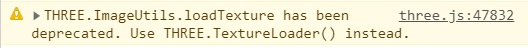

Iniziato il progetto.
Abbiamo scelto di utilizzare il codice con le texture e l'illuminazione.
Abbiamo scelto di separare in file separati il contenuto del file "startingCode-withLights.html" per una migliore organizzazione del codice:
Aggiunta la versione non minificata del file contenente la libreria Three.js per una migliore chiarezza dei possibili errori.
Aggiornato il metodo di caricamento delle texture: utilizzando il codice fornito nel codice d'inizio veniva stampato un warning di metodo obsoleto.

Aggiornato il file "OrbitControls" con la versione più recente scaricata dal repositiory di three js